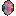

Level 75 reference · Zenith rules
Overview


Sanction Effects
While in a Sanction region with the Sanction effect active, the following will occur:
- Defeating an enemy that grants Experience Points (i.e. Easy Prey or higher) will earn the player Imperial Standing Points amounting to 10% of the base Experience Points, if battling in a region possessing the Astral Candescence.
- When defeating an enemy that grants a player Experience Points, there is a chance that an elemental Crystal will drop from that enemy. (When in a party with other members who also have Sanction active, there is a chance that additional Crystals can drop.)
- Players will receive a bonus of 5-15% addtional Experience Points for each enemy defeated, if Al Zahbi has the possession of Astral Candescence.
Note that Sanction is one of the few beneficial Status Effects that cannot be directly removed via its icon; once applied, you must wait until the Sanction effect expires on its own, or override it with another effect.
- Signet will overwrite Sanction and vice versa, including the use of a Signet Staff.
- Sanction grants no effect and no Imperial Standing Points in area not subject to Sanction; the excluded area includes all regions subject to either Signet.
Sanction Effect Duration
Mercenary Rank Duration Private Second Class 3 hours Private First Class 4 hours Superior Private 5 hours Lance Corporal 6 hours Corporal Sergeant Sergeant Major Chief Sergeant Second Lieutenant First Lieutenant Captain
- While the Astral Candescence is not under imperial control, the duration of Sanction is reduced.
Sanction Enhancements
These enhancements only work when Sanction is active and the Astral Candescence is under imperial control.
- The Astral Candescence is now in Al Zahbi, so you will receive an experience bonus from battles. You can also select one of the following bonuses in exchange for a slight decrease in your Imperial standing.
- Choose a bonus for 100 credits:
- Not now
- Regen
- Refresh
- Increased Meal Duration
- Choose a bonus for 100 credits:
Notes
Sanction strength enhances by successfully defending the Astral Candescence through consecutive Besieged attacks. As the server's winning streak continues, the bonuses conferred by the Candescence increase:
- The experience bonus rises from 5% to 15%.
- The meal duration enhancement doubles the normal length of food eaten from any area.
- The Regen enhancement is active at a progressively higher percentage of HP, active from 1 HP to an HP cap of up to 95% of the player's maximum HP. Regen is 1 HP/tick.
- The Refresh enhancement is active from 0 MP to an MP cap of up to 85% of the player's maximum MP. Refresh is 1 MP/tick.
- For this purpose, "maximum MP" does not include percentage MP increases from items such as Vermillion Cloak or foods such as Marron Glace, or increases to MP from Convert HP to MP gear such as Ether Ring, but does include all flat MP increases.
Adapted from Eden Wiki: Sanction · Contributors and history · CC BY-SA 4.0. Revision 43994. Layout, links and optional background text adapted for Zenith.